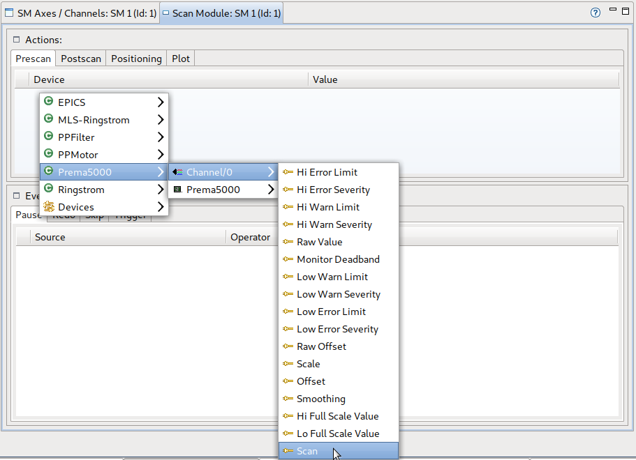

To add a device (e.g. a motor axis) to a scan module follow these steps:
In the Editor, select the scan module the device should be added to by (left-)clicking on it:
The previously empty SM Axes / Channels View and Scan Module View now show the contents of the scan module just selected.

To add an axis or channel to the selected scan module select the SM Axes / Channels View and (right-)click in the white area of the corresponding table to open a context menu showing all devices (ordered by classes). Navigate to the axis you want to add and click on it (or click on add all to add all devices of the class). Note that depending on the current device definition and configuration (class names) different devices are shown.

To add a pre-/postscan, positioning or plot select the Scan Module View and follow the steps analog to adding an axis or channel.

Be sure to checkout the other task entries on how to edit properties of an axis, a channel and other devices.